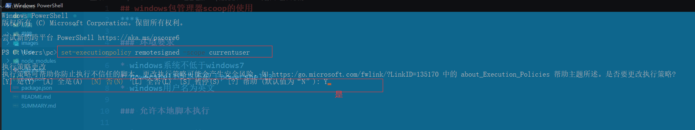

windows包管理器scoop的使用
环境要求
- windows系统不低于windows7
- powershell版本不低于powershell3
- windows用户名为英文
允许本地脚本执行
- 打开powershell输入
set-executionpolicy remotesigned -scope currentuser - 确认执行 
安装使用
- 执行命令
iex (new-object net.webclient).downloadstring('https://get.scoop.sh') - 查看帮助
scoop help - 常用命令
| 动作 | 描述 |
|---|---|
| search | 搜索软件名 |
| install | 安装软件 |
| update | 更新软件 |
| status | 查看软件状态 |
| uninstall | 卸载软件 |
| info | 查看软件详情 |
| home | 打开软件主页 |